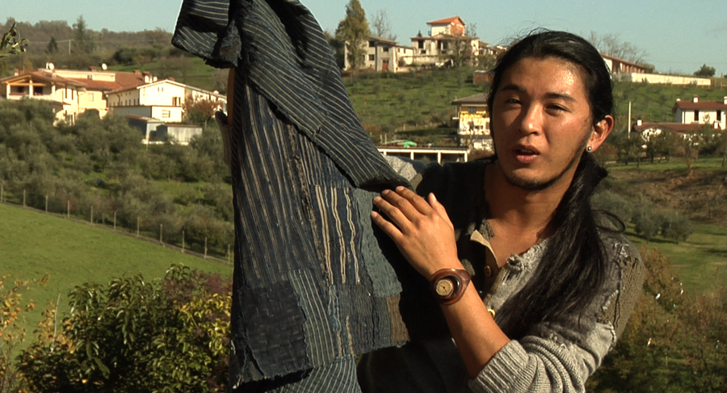

It's no secret that Diesel is often more expensive than many other denim brands on the market. But very few people understand why. The fact is that Diesel jeans use the best italian and japanese denim, are hand made and hand finished.
Diesel pioneered the art of washed denim and denim abrasions long before any other apparel brand. They still spend heavily on research and development into new techniques not only for washes and abrasions, but also denim construction, employing techniques usually found in high quality tailoring, not high street fashion.
Diesel employs denim specialists (called five pocket specialists) in all of their retail stores who are trained to help customers find the best, most comfortable fit for them. This documentary communicated the value of Diesel denim to denim specialists specialists who could then pass that information
along to the consumer.

The training video was filmed as a documentary, written, directed, edited and authored by me. It offered viewers an opportunity to meet people at every step in turning raw unwashed denim into a pair of Diesel Jeans. We learn about research methods, how wash and abrasion techniques are developed, the differences between different types of denim and weave and the importance of top secret construction techniques used only by Diesel.
As someone who had worked at Diesel HQ for a number of years, much of this information was new to me and it was exciting to dig deeper into the pounds and pennies behind the price tag. The experience also turned me into a Diesel denim evangelist, a sentiment that hopefully spread to the denim specialists on the shop floor.